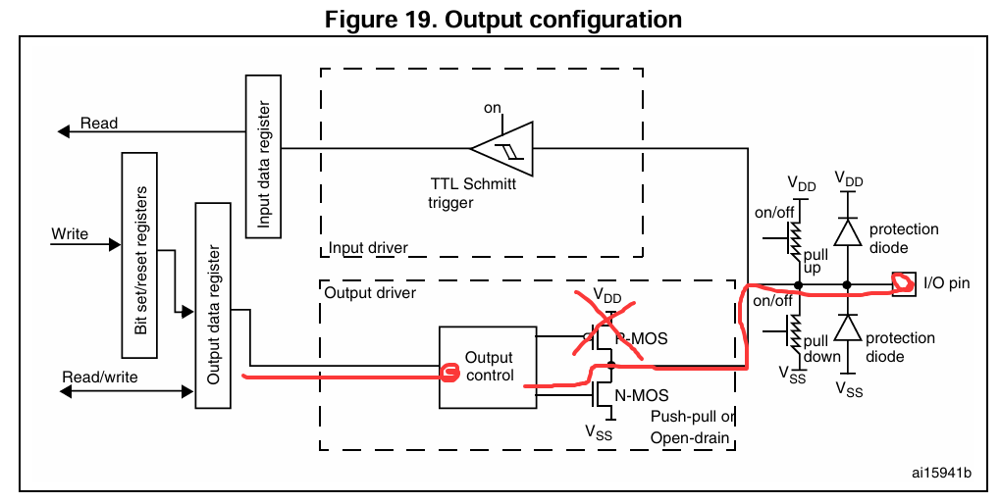
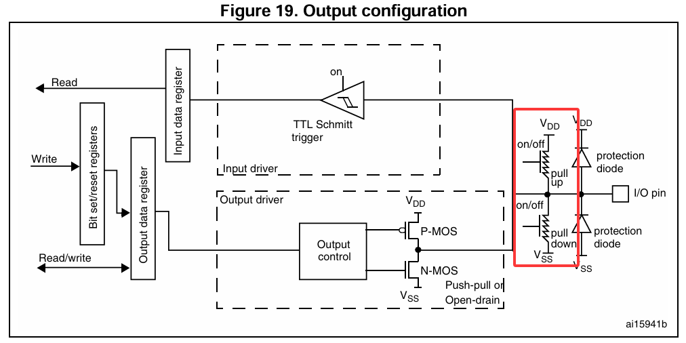

GPIO使用
本节介绍
📝本节您将了解 GPIO 的概念，并且了解开发板的 LED 硬件电路，学习如何使用图形化代码生成工具CubeMX，让开发板上的LED灯进行闪烁。
1️⃣了解 GPIO 的概念。 2️⃣了解主控 STM32F411 的 GPIO 硬件特性和 GPIO 结构。 3️⃣了解开发板上的 LED 硬件电路。 4️⃣使用图形化工具通过 GPIO 外设，控制 LED 灯闪烁。
GPIO 的基本概念
什么是 GPIO
GPIO，全称为 「General-Purpose Input/Output」，即通用输入 / 输出端口。
它是微控制器、微处理器和某些其他集成电路上的一个引脚，可以由软件控制其输入或输出状态。
GPIO 为开发者提供了一种简单、灵活的方式来控制硬件设备或与外部设备进行通信。
GPIO 的输入 / 输出
当 GPIO 引脚被配置为输入模式时，它可以读取外部信号的状态，通常是高电平或低电平。 这种模式常用于以下场景： 📌 读取开关/按钮状态：例如，检测一个按钮是否被按下。 📌 接收信号：从其他设备（如传感器、其他微控制器）接收数字信号。 📌 中断触发：配置为输入的 GPIO 引脚可以用于触发中断，响应外部事件。 需要注意，在输入模式下，GPIO 引脚通常具有高阻态，以防止对连接的设备造成影响。
当 GPIO引 脚被配置为输出模式时，它可以输出高电平或低电平，用于控制外部设备。 这种模式常用于以下场景： 📌 驱动LED：通过输出高电平或低电平来控制LED的亮灭。 📌 控制继电器：通过输出信号来控制继电器的开关。 📌 通信：在诸如I2C、SPI等通信协议中，GPIO引脚用于输出时钟信号或数据。 需要注意，在输出模式下，GPIO 引脚只能提供一些驱动能力，以驱动外部负载。需要大电流的时候使用 GPIO 输出是无法驱动的。 通常 GPIO 的输出电流只有为 20mA 左右
高电平与低电平
高电平与低电平是数字电路中的基本概念，用于表示电路中的两种不同的电压状态，这两种状态通常用于表示二进制数据中的 1 和 0 。
📌 定义：在数字电路中，高电平通常表示一种较高的电压状态。 📌 电压范围：具体的电压范围取决于所使用的逻辑电路标准。在 STM32F411 中，IO 电平是3.3V。 📌 表示：在数字逻辑中，高电平通常表示 “1” 或 “真（True）” 状态。
📌 定义：与高电平相对，低电平表示一种较低的电压状态。 📌 电压范围：同样，具体的电压范围取决于逻辑电路标准。在 STM32F411 中，低电平是接近 地 电位的值（如 0 V）。 📌 表示：在数字逻辑中，低电平通常表示 “0” 或 “假（false）” 状态。
注意！不同的电子设备可能使用不同的电平标准，因此在连接不同设备时需要确保电平兼容。比如芯片的 IO 是 3.3V，当它需要接入到 5V 的传感器时，就需要考虑电平兼容问题。不过这个问题在STM32上基本被解决了，大部分的 IO 是兼容 5V 的。
主控的 GPIO 硬件特性
绝对最大额定值
 |
|---|
建议运行条件
GPIO电源特性总结
芯片标准工作电压 1.7~3.6V，最大输入 4V。除 PA0 \ PB5 \ PA4 \ PA5 是标准的 3.3V 的引脚外，其他的 GPIO 都是兼容 5V 电压，最高输入 5.5V。
单 GPIO 口的输出电流为 25 mA，全部 GPIO 的输出电流最大 120 mA。
单 GPIO 口的输入电流为 5 mA，全部 GPIO 的输入电流最大 25 mA。
GPIO 结构介绍
输出模式
输出模式有两种结构。
既能输出低电平，也能输出高电平。
只能输出低电平，不能输出高电平。 
输入模式
通过引脚输入的模拟电压信号，经过一个 TTL 施密特触发器后，转化为一个 TTL 电平（即只有高电平和低电平的区别），然后进入到寄存器中。
浮空与上下拉电阻
通过配置上拉电阻（pull up）和下拉电阻（pull down）实现让引脚默认为高电平还是低电平。
浮空就是既不配置上拉也不配置下拉，这个时候除非接入有信号，不然输入值是不确定的。
|  |
|---|
LED 电路介绍
LED 灯发光原理
LED（发光二极管）发光原理基于半导体特性。在半导体中，存在着两类载流子：电子（n型半导体）和空穴（p型半导体）。当n型与p型半导体材料接触时，会在交界处形成一个层结。当施加适当的电压时，层结中空穴和电子可重组并释放能量。这个能量以光子的形式释放出来，产生光。
LED 灯驱动原理
LED 驱动指的是通过稳定的电源为 LED 提供合适的电流和电压，使其正常工作点亮。LED 驱动方式主要有恒流和恒压两种。限定电流的恒流驱动是最常见的方式，因为 LED 灯对电流敏感，电流大于其额定值可能导致损坏。恒流驱动保证了稳定的电流，从而确保了 LED 安全。
不过，在单片机上，想用GPIO控制LED的亮灭，也分有两种：灌入电流和输出电流。
灌入电流指的是LED的供电电流是由外部提供电流，将电流灌入我们的MCU；风险是当外部电源出现变化时，会导致MCU的引脚烧坏。输出电流指的是由MCU提供电压电流，将电流输出给LED；如果使用 MCU 的 GPIO 直接驱动 LED，则驱动能力较弱，可能无法提供足够的电流驱动 LED。
需要注意的 是 LED 灯的颜色不同，对应的电压压降也不同。电流不可过大，通常需要接入220欧姆到10K欧姆左右的限流电阻，限流电阻的阻值越大，LED的亮度越暗。
板载 LED 电路解析
在开发板上，有一个 LED灯 接到了开发板 F411 主控的 PC13 引脚，采用的接法是输出电流接法。
其中，R22 为 LED 灯的限流电阻，限流电阻通常跟 LED 搭配，防止 LED 灯电路上的电流过大，导致 LED 灯烧毁。因为 LED 灯本质上就是一个二极管，而二极管导通时相当于是一根导线，如果一端接3V3一端接GND，根据简单的欧姆定律就可以知道电流会非常大，就短路了。
限流电阻使用的是 2K 阻值，可以根据欧姆定律就可以计算出该 LED 灯电路需要的电流为：
该输出电流对于我们单个 GPIO 最大输出电流 25mA 来说，绰绰有余。
点亮 LED 就要让这个 LED 发光二极管导通，导通就需要正极高电平，负极低电平，符合这个条件时，LED 就有电流流过，而有了电流，LED 灯就会发光。而这里采用的是输出电流接法。 那么如果要点亮 LED，则控制 PC13 引脚输出高电平；如果要熄灭 LED，则控制 PC13 引脚输出低电平；
案例工程创建
目标：配置 PC13 引脚为推挽输出模式，控制该引脚以一定的时间间隔切换高电平和低电平状态，让 PC13 引脚上的 LED 灯实现闪烁效果。
打开 CubeMX，创建一个名为 02_gpio 的工程。
工程基本配置说明：
- 选择 Project Manager 选项
- 选择 Project 配置
- 设置工程名称为 02_gpio
- 设置开发环境为 MDK-ARM，以及目前的最小版本
工程 GPIO 配置说明：
- 选择 Pinout & Configuration 选项
- 选择 SyStem Core 配置
- 在 SyStem Core 配置下，打开 GPIO 配置页
- 在右侧芯片引脚分布图中找到或者搜索 PC13 引脚，左键配置为 GPIO_Output 模式
- 选中我们刚才配置的 PC13 引脚
- 配置 PC13 引脚为默认低电平输出、推挽输出模式、浮空状态、低速翻转速度、自定义名称为 LED_TEST2
| 配置选项 | 选项说明 | 可选参数 |
|---|---|---|
| GPIO output level | 配置 GPIO 的默认输出电平 | 低电平 Low 高电平 High |
| GPIO mode | 配置 GPIO 模式 | 推挽输出 Output Push Pull 开漏输出 Output Open Drain |
| GPIO Pull-up/Pull-down | 配置上下拉电阻 | 浮空No pull-up and no pull-down 上拉Pull-up |
| Maximum output speed | 配置最大翻转速度 | 低速Low[1] |
| User Label | 用户给该引脚一个自定义的标签方便辨识 | 自定义 |
有部分引脚支持高速，这里 PC13 只支持低速。
开始生成工程代码。
生成完毕后，直接打开工程。
工程代码编写
生成代码分析
在生成的工程代码中，我们可以在 main.c 找到关于 GPIO 的配置：
关于 GPIO 的配置流程总结如下：
开启对应 GPIO 组的时钟
__HAL_RCC_GPIOC_CLK_ENABLE();配置 GPIO 的基本信息：
/*Configure GPIO pin Output Level */ /* 设置标签为 LED_TEST2 的引脚，输出低电平 */ HAL_GPIO_WritePin(LED_TEST2_GPIO_Port, LED_TEST2_Pin, GPIO_PIN_RESET); /*Configure GPIO pin : LED_TEST2_Pin */ GPIO_InitStruct.Pin = LED_TEST2_Pin; // 配置 LED_TEST2 这个标签的引脚 GPIO_InitStruct.Mode = GPIO_MODE_OUTPUT_PP; // 配置为推挽输出模式 GPIO_InitStruct.Pull = GPIO_NOPULL; // 配置浮空 GPIO_InitStruct.Speed = GPIO_SPEED_FREQ_LOW;// 配置低速翻转速度 //将以上配置写入到 GPIO 寄存器中 HAL_GPIO_Init(LED_TEST2_GPIO_Port, &GPIO_InitStruct);
总结：
- 如果没有 CubeMX 图形化工具，那么以上代码都要我们手撸，很麻烦。
- 时钟对于外设来说就是生命，没有开启时钟，外设就无法启动。
常用功能函数总结
我们现在通过 CubeMX 生成了一个 PC13 默认为低电平的输出模式，那么我们要怎么让 PC13 引脚一会高电平一会低电平呢？
来认识一下下面这些常用API函数：
/**
* @brief 根据 GPIO_Init 中的指定参数初始化 GPIOx 外设
* @param GPIOx 其中 x 可以是 (A..K) 用于选择 STM32F429X 设备的 GPIO 外设，
* 或 x 可以是 (A..I) 用于选择 STM32F40XX 和 STM32F427X 设备的 GPIO 外设。
* @param GPIO_Init 指向 GPIO_InitTypeDef 结构体的指针，该结构体包含
* 指定 GPIO 外设的配置信息。
* @retval 无
*/
void HAL_GPIO_Init(GPIO_TypeDef *GPIOx, GPIO_InitTypeDef *GPIO_Init)
/**
* @brief 将 GPIOx 外设寄存器反初始化为默认复位值
* @param GPIOx 其中 x 可以是 (A..K) 用于选择 STM32F429X 设备的 GPIO 外设，
* 或 x 可以是 (A..I) 用于选择 STM32F40XX 和 STM32F427X 设备的 GPIO 外设。
* @param GPIO_Pin 指定要操作的端口引脚
* 此参数可以是 GPIO_PIN_x，其中 x 范围为 (0..15)
* @retval 无
*/
void HAL_GPIO_DeInit(GPIO_TypeDef *GPIOx, uint32_t GPIO_Pin)
/**
* @brief 读取指定的输入端口引脚状态
* @param GPIOx 其中 x 可以是 (A..K) 用于选择 STM32F429X 设备的 GPIO 外设，
* 或 x 可以是 (A..I) 用于选择 STM32F40XX 和 STM32F427X 设备的 GPIO 外设。
* @param GPIO_Pin 指定要读取的端口引脚
* 此参数可以是 GPIO_PIN_x，其中 x 范围为 (0..15)
* @retval 输入端口引脚的值
*/
GPIO_PinState HAL_GPIO_ReadPin(GPIO_TypeDef* GPIOx, uint16_t GPIO_Pin)
/**
* @brief 设置或清除选定的数据端口位
*
* @note 此函数使用 GPIOx_BSRR 寄存器实现原子读/修改访问，
* 这种方式可确保在读取和修改访问之间不会发生 IRQ 中断风险
*
* @param GPIOx 其中 x 可以是 (A..K) 用于选择 STM32F429X 设备的 GPIO 外设，
* 或 x 可以是 (A..I) 用于选择 STM32F40XX 和 STM32F427X 设备的 GPIO 外设。
* @param GPIO_Pin 指定要操作的端口引脚
* 此参数可以是 GPIO_PIN_x，其中 x 范围为 (0..15)
* @param PinState 指定要写入选定位的值
* 此参数可以是 GPIO_PinState 枚举值之一：
* @arg GPIO_PIN_RESET: 清除端口引脚
* @arg GPIO_PIN_SET: 置位端口引脚
* @retval 无
*/
void HAL_GPIO_WritePin(GPIO_TypeDef* GPIOx, uint16_t GPIO_Pin, GPIO_PinState PinState)
/**
* @brief 切换指定的 GPIO 引脚状态
* @param GPIOx 其中 x 可以是 (A..K) 用于选择 STM32F429X 设备的 GPIO 外设，
* 或 x 可以是 (A..I) 用于选择 STM32F40XX 和 STM32F427X 设备的 GPIO 外设。
* @param GPIO_Pin 指定要切换的引脚
* @retval 无
*/
void HAL_GPIO_TogglePin(GPIO_TypeDef* GPIOx, uint16_t GPIO_Pin)
以上代码为工程中的 stm32f4xx_hal_gpio.c 文件中的内容经过中文翻译后的结果。
我们来举一个例子，假设我要读取 PA0 的电平，如果是高电平则让 PC13 输出低电平，如果是低电平则让 PC13 输出高电平。
根据以上的常用功能函数总结，可以这样写：
/*
读取 PA0 的电平，如果是高电平则让 PC13 输出低电平，如果是低电平则让 PC13 输出高电平。
*/
//如果PA0为高电平
if( HAL_GPIO_ReadPin( GPIOA, GPIO_PIN_0 ) == GPIO_PIN_SET )
{
//PC13输出低电平
HAL_GPIO_WritePin( GPIOC, GPIO_PIN_13, GPIO_PIN_RESET );
}
//否则如果PA0为低电平
else if( HAL_GPIO_ReadPin( GPIOA, GPIO_PIN_0 ) == GPIO_PIN_RESET )
{
//PC13输出高电平
HAL_GPIO_WritePin( GPIOC, GPIO_PIN_13, GPIO_PIN_SET );
}
实现案例要求
我们之前的目标：配置 PC13 引脚为推挽输出模式，控制该引脚以一定的时间间隔切换高电平和低电平状态，让 PC13 引脚上的 LED 灯实现闪烁效果。
现在配置 PC13 引脚我们已经完成了，然后设置高低电平输出的功能函数 HAL_GPIO_WritePin 我们也知道怎么用了，那怎么实现 以一定的时间间隔切换引脚状态 呢？
可以通过工程自带的一个延时函数实现：HAL_Delay(ms)
/**
* @brief This function provides minimum delay (in milliseconds) based
* on variable incremented.
* @note In the default implementation , SysTick timer is the source of time base.
* It is used to generate interrupts at regular time intervals where uwTick
* is incremented.
* @note This function is declared as __weak to be overwritten in case of other
* implementations in user file.
* @param Delay specifies the delay time length, in milliseconds.
* @retval None
*/
__weak void HAL_Delay(uint32_t Delay)
{
uint32_t tickstart = HAL_GetTick();
uint32_t wait = Delay;
/* Add a freq to guarantee minimum wait */
if (wait < HAL_MAX_DELAY)
{
wait += (uint32_t)(uwTickFreq);
}
while((HAL_GetTick() - tickstart) < wait)
{
}
}
HAL_Delay(ms) 的作用就是延时指定的 ms 时间，比如延时 500ms，则写为 HAL_Delay(500);
现在我们已经万事俱备，开始实现目标功能。
在我们工程的 main.c 文件中的 while 里加入以下代码：
HAL_Delay(500);
HAL_GPIO_WritePin(LED_TEST2_GPIO_Port, LED_TEST2_Pin, GPIO_PIN_RESET);
HAL_Delay(500);
HAL_GPIO_WritePin(LED_TEST2_GPIO_Port, LED_TEST2_Pin, GPIO_PIN_SET);
对我们的工程进行编译，如果没有问题则是输出 - 0 Error(s), 0 Warning(s).
如果工程编译报错如下：
*** Target '02_gpio' uses ARM-Compiler 'Default Compiler Version 5' which is not available.
*** Please review the installed ARM Compiler Versions:
'Manage Project Items - Folders/Extensions' to manage ARM Compiler Versions.
'Options for Target - Target' to select an ARM Compiler Version for the target.
*** Build aborted.
Build Time Elapsed: 00:00:00
则需要设置 ARM 编译器使用 AC6 版本：
 |
|---|
完成后重新编译。
下载验证
硬件连接
这里我使用的是 DAP-LINK，故在工程上配置为 CMSIS-DAP。
理论上 ST-LINK、J-LINK、DAP-LINK都可以对该项目的主控进行下载。
 |
|---|
我的下载器实物（点击展开）

下载器与开发板的连接：
| DAP-LNK | 开发板 |
|---|---|
| GND | GND |
| 3V3 | 3V3 |
| SWDIO | SWDIO |
| SWCLK | SWCLK |

打开工程的debug设置选项，确认能够识别到下载器和芯片。
设置下载完成后自动复位。
 |
|---|
下载。
效果验证
开发板右侧最上方 F411 的 LED 灯缓慢闪烁。
 |
|---|
本章例程下载
通过网盘分享的文件：02_gpio.zip
链接: https://pan.baidu.com/s/1CaTYreiV-Ih9NuyQGO7e0Q
提取码: LGGY